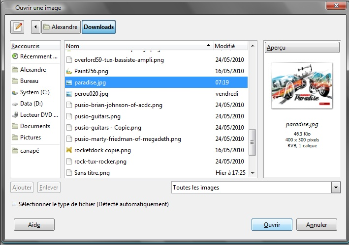
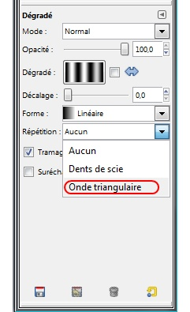
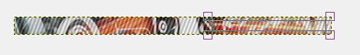
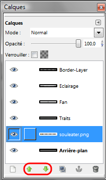

Bienvenue sur mon tutoriel pour débutants dans la création d'UserBar.
C'est quoi ? o_O
Une UserBar est une image qu'on trouve souvent dans les forums qui sert à exprimer les goûts de quelqu'un de façon graphique, par exemple, quelques-unes des miennes :
Pour créer une UserBar, vous aurez toujours besoin de :
La police d'écriture Visitor
Un logiciel supportant les claques calques :p comme GIMP.
GIMP
Attends attends ! Pourquoi utiliser GIMP, et pas Photoshop ou je ne sais quoi d'autre ?
Bonne question, nous allons utiliser GIMP car, contrairement à Photoshop, il est totalement gratuit et libre (donc ses sources sont téléchargeables), et il est aussi puissant que ce dernier, le seul "hic", c'est que son interface fait un peu peur aux débutants, mais ne vous inquiétez pas, vous apprendrez à le maîtriser en partie à travers ce tutoriel, mais si vous souhaitez ensuite approfondir vos connaissances, je vous conseille ce tutoriel.
Passons au téléchargement :
Pour Windows cliquez sur le lien Download GIMP 2.6.x .
Pour Mac : expliqué plus bas dans le tutoriel.
Et pour Linux : un simple sudo apt-get install gimp et le tour est joué ! Et pour les navigateurs supportant le protocole "apt", cliquez ici !
Installation
Pour Windows, c'est simple... vous cliquez sur suivant, suivant, etc... puis sur terminé.
Pour Linux, c'est encore plus simple, après l'apt-get install, laissez l'installation s'exécuter.
Pour MacOS :
Il vous faut tout d'abord télécharger GIMP. Rendez-vous ici et cliquez sur la version de votre Mac. Si vous ne savez pas quel est le numéro de cette version, cliquez sur le menu Pomme puis sur A propos de ce Mac.
Le numéro de version se trouve sur la deuxième ligne de texte. Bref, revenons à nos moutons. Ouvrez le fichier .dmg que vous venez de télécharger. Il vous faut juste faire un glisser-déposer de l'icône de Gimp dans le dossier de votre choix et attendre quelques secondes... Gimp est maintenant installé !
Logo de X11Pour lancer Gimp depuis Mac OS X, vous devez posséder l'environnement X11 qui, en gros, permet de faire tourner des applications initialement prévues pour Linux et pas vraiment adaptées pour Mac. Normalement, X11 est livré avec votre ordinateur. Si pour une quelconque raison vous ne l'avez pas, il est grand temps de le télécharger. X11 se trouve dans le dossier Utilitaires du répertoire Applications. Lancez Gimp. Au tout premier démarrage, vous devez patienter pas mal de temps le tant que X11 fasse bien tout comme il le faut. Allez vous chercher un café, vous avez le temps mais soyez patients. :p Beaucoup de novices se demandent pourquoi au premier démarrage seulement X11 tourne et pas Gimp. Ils croient dès lors que Gimp ne marche pas.
La police Visitor
Téléchargez la police Visitor ici. Décompressez l'archive et mettez tous les fichiers dans le dossier Fonts : C:\Windows\Fonts Pour Linux, créez un dossier ".fonts" dans votre dossier personnel : /home/utilisateur/.fonts et mettez la police dedans. Pour Mac : je n'ai pas de Mac, mais j'ai réussi à vous dénicher un petit quelque chose :
Citation : FAQ - Danfon.com
Sous Mac OS X 10.3 ou plus (incluant le Livre des polices) : Double-clic sur le fichier de police > bouton "Installer la police" en bas de la fenêtre.
Sous n'importe quelle version de Mac OS X :
Placez les fichiers dans /Library/Fonts (pour tous les utilisateurs), ou dans /Users(ou Utilisateurs)/Votre_nom_utilisateur/Library(ou Bibliothèque)/Fonts (pour vous seulement).
Petite information avant de commencer :
Voici des UserBars :
Celle-ci signifie que je suis un fan de Soul Eater.
Une autre moins bien faite sur les Guns'... je m'étais gouré de résolution...
Et encore une sur le VB.net...
Cool, c'est bien, on voit que tu sais les faire mais nous, ça nous avance pas !
Je vous ai montré celles-ci pour vous faire comprendre quelque chose : Le style d'une userbar n'est jamais le même : par exemple, sur la première, j'ai utilisé un dégradé comme fond, sur la seconde, c'est une image, sur la troisième, il n'y a qu'un logo... Bref, pour résumer, il faut toujours essayer de varier :
Le fond (image, couleur ou dégradé) ;
l'éclairage ;
le texte (soit une image, ou un texte appliqué plus tard) ;
les traits (facultatif), ça peux aussi être des motifs comme des points, ou une grille ;
et le logo (facultatif).
Bien sûr, vous pouvez mettre d'autres fantaisies (logo qui sort de la barre, etc), c'est à vous de choisir, la seule limite étant votre imagination... et la taille de L'UserBar. Eh oui ! Pour avoir quelque chose considéré comme une UserBar, ne dépassez pas 400px de large et 30px de hauteur, sachant que les dimension générales sont de 349px sur 19px...
Maintenant, passons à la découverte de son interface.
L'interface de GIMP
Pour commencer, lancez GIMP (lors du premier lancement, le chargement peut être long) :
Vous comprenez maintenant pourquoi je vous disais que l'interface faisait peur aux débutants ? Mais ne vous en faites pas, je vais vous faire découvrir :
La fenêtre "Éditeur d'images GIMP"
C'est la fenêtre principale, dans laquelle vous aurez un document, en haut de celle-ci, vous avez la barre de menu, comprenant toutes les fonctionnalités de GIMP. Vous remarquerez, par la suite, qu'il y a une fenêtre principale pour chaque image.
Le fenêtre "Boite à Outils"
Comme son nom l'indique, elle contient des raccourcis vers les fonctions principales de GIMP, comme "faire un dégradé", "remplir une zone de couleur", "rectangle de sélection" etc... Il n'y a qu'une seule boite à outils, contrairement aux fenêtres principales....
Le fenêtre "Calques"
Cette fenêtre, sert à gérer les calques (fusion, suppression, monter/descendre d'un rang, etc).
C'est quoi un calque ?
Voici ce que dit Wikipedia à son sujet : (la flemme d'inventer une définition :-° )
Citation : Wikipedia
Les calques sont, en infographie, un ensemble de couches empilées les unes au-dessus des autres, dont chacune contient une partie des éléments constituant l'ensemble, ce dernier étant obtenu par la superposition de tous les calques. Dans ce système, chaque élément peut être placé sur un calque différent, si bien que l'on peut décomposer le travail, ce qui le rend plus simple. Des systèmes de calques sont présents dans de nombreux logiciels, à la fois pour l'édition d'images matricielles ou vectorielles, pour la PAO, etc. Il est possible de masquer ou de verrouiller certains calques, de faire passer un élément d'un calque à l'autre, de modifier l'ordre d'empilement des calques, de regrouper certains calques entre eux de manière à les rendre solidaires, etc. Chaque calque se voit généralement associé un certain nombre de paramètres, tels que la transparence.
Voilà, nous avons fait un petit tour sur l'interface, maintenant commençons la création !
Nous y voilà, nous allons donc commencer la création de votre première UserBar ! Dans le chapitre précédent, nous avons dit (ou plutôt j'ai dit :-° ) que celle-ci comportera une image de fond, des traits classiques, du texte (avec devinez quoi... la police Visitor ! ), un éclairage en haut (c'est généralement le cas...) et une bordure (ou cadre si vous préférez ).
Et on va utiliser quoi comme image de fond ?
C'est vous qui voyez.
En effet, je ne peux pas vous imposer le choix d'un fond, selon les goûts certains aimeront, d'autres non, donc faites-vous plaisir !
Pour moi, je vais prendre une image de Burnout Paradise : The Ultimate Box :
Mais rien ne vous empêche de prendre une image de Naruto, de Plus Belle la Vie ou d'une Gibson SG ! Non ! Non ! Partez pas, c'est juste une guitare, rien de plus ! :lol:
Création de l'image
Lancez GIMP si ce n'est pas fait et, dans la fenêtre principale (je vous ai dit ce que c'était dans le chapitre précédent), créez une nouvelle image en faisant Fichier->Nouveau ou bien Ctrl+N, cette fenêtre s'ouvre alors:
Elle nous demande certains renseignements concernant le nouveau document, nous allons juste nous occuper de la longueur et de la largeur. Mettez 350 pixels pour la largeur et 20 pixels pour la longueur, c'est la taille "standard" d'une UserBar, mais par la suite, vous pourrez prendre d'autres dimensions.
Puis cliquez sur "valider", une nouvelle fenêtre principale s'ouvre avec votre document :
Le fond
Vous avez choisi votre image de fond ? Tant mieux, c'est maintenant qu'elle entre en scène. :-° Faites "Fichier->Ouvrir en tant que calque..." ou bien Ctrl+Alt+O, une fenêtre s'ouvre. Dedans, sélectionnez votre image (en parcourant les fichiers) puis cliquez sur "ouvrir" :

Vous vous retrouvez donc avec votre image en tant que nouveau calque dans l'UserBar :
Maintenant, déplacez-la dans le document en cliquant sur l'outil "Déplacement" :
(raccourci : M, cet outil se trouve dans la boite à outils). Cliquez sur votre image, et bougez-là de façon à obtenir un résultat convenable (et de façon à comprendre ce qu'elle représente ^^ ):
Bien, votre fond est bien placé, nous allons nous attaquer aux traits !
Les traits... grâce aux dégradés !
Nous allons créer un nouveau calque, pour cela, rendez-vous dans la fenêtre "Calques", et cliquez sur le bouton
(il se trouve en bas à gauche de la fenêtre), une fois ceci fait, une fenêtre apparait :
Indiquez le nom du calque, c'est facultatif, mais je vous le conseille fortement, car le jour ou vous aurez 20 calques "Sans Titre", ça sera.... le bordel. :-°
OK, mais nous on met quoi comme nom ?
Nommez le "Traits", je pense que ça suffira :
Puis cliquez sur "Valider", votre fenêtre "Calques" doit maintenant ressembler à ça :
Poursuivons, dans la boite à outils, sélectionnez l'outil dégradé :
(raccourci : L), votre boite d'outils doit maintenant afficher les informations concernant le dégradé. Pour commencer, cliquez sur le gros bouton noir et blanc se trouvant à droite du texte "Dégradé" dans la boite à outils, et sélectionnez le dégradé "Three bars sin" (il se situe assez bas dans le menu contextuel) :
Et toujours dans la même fenêtre, à côté de "Répétition", sélectionnez "Onde Triangulaire" :

Maintenant, passons à l'action :pirate: . Déjà, faites Ctrl + un coup de molette vers le haut pour zoomer d'un cran, ou bien appuyez sur + (ou Maj + + pour les PC sans pavé numérique ;) ). Cliquez sur votre image pour donner un point "repère", restez enfoncé et relâchez lorsque les deux points (le deuxième étant créé lors du relâchement) sont comme sur l'image ci-dessous :
Pour obtenir un résultat "classique", le deuxième point doit être un peu plus bas que le premier, chez moi, j'ai ça :
Et lorsqu'on relâche :
Ahhrg ! Vision d'horreur ! C'est horrible !
Je vous l'accorde, c'est en noir et blanc, et on ne voit plus notre fond. Pour remédier à ça, rendez-vous dans la fenêtre des calques et assurez-vous d'avoir le calque "Traits" sélectionné (sinon, cliquez dessus) :
Vous voyez la petite barre a coté de "Opacité" (j'appelle ça un slider :-° ) ? Faites-le glisser vers la gauche jusqu'à ce que l'opacité soit (environ) à 30 :
Regardez votre UserBar (en dezoomant : avec - ou Maj + -) :
Conclusion : Merci qui ? :D
Le texte
C'est une étape assez importante, si vous tenez à faire comprendre quelque chose sur votre UserBar :-° . Pour commencer, assurez-vous d'avoir la police Visitor installée sur votre ordinateur. Une fois que c'est vérifié, cliquez sur le bouton "texte" dans la boîte d'outils :
(raccourci : T). Une fois sélectionné, dessinez un rectangle là où vous voulez écrire votre texte (je vous conseille de rezoomer un coup) :

Une petit fenêtre s'ouvre, écrivez votre texte puis fermez-la :
Vous pouvez le constater, le texte est bien trop gros. Pour remédier à cela, allez dans la boite à outils, et sélectionnez la police "Visitor TT2 BRK", puis mettez la taille à 16 (ou à 14). Vous pouvez changer la couleur si nécessaire :
Ensuite, modifiez votre rectangle de sélection grâce aux quatre carrés situés dans ses angles pour arranger votre texte :
Le texte est terminé ! Prochaine étape : l'éclairage !
L'éclairage
L'éclairage est ce qui donne un "effet" plus professionnel (et surtout plus joli :p ) à l'UserBar.
Cool, et on fait comment ?
Une simple demi-ellipse blanche avec une opacité à 30 fera l'affaire ;) . Pour commencer, créez un nouveau calque et nommez-le "Eclairage", en mode transparent. Vous devez savoir comment faire. Si non, relisez la partie sur les traits. Donc, dans votre fenêtre "Calques", vous devriez avoir ça :
Nous allons utiliser l'outil "Sélection Elliptique" de, devinez où, la boite à outils ! (Je sais, je sais, mes chapitres sont... très originaux :-° )
Pour utiliser cet outil, cliquez sur :
(raccourci : E). Cet outil marche comme le rectangle pour l'outil "Texte". Créez une ellipse, et modifiez-la avec les carrés pour obtenir quelque chose comme ça :
Maintenant, on va la remplir de blanc avec l'outil "Remplissage" :
(raccourci : Maj + B). Dans la partie "Type de remplissage", choisissez "remplir avec la couleur d'AP". Cette couleur, par défaut, est blanche, mais vous pouvez la changer en cliquant là :
Si vous ne voyez pas bien, vous devez cliquer dans le rectangle blanc (sur l'image) pour changer cette couleur, mais si elle est déjà blanche, ne touchez à rien ;) .
Une fois la couleur paramétrée, remplissez l'ellipse comme avec l'outil "Remplissage" de Paint, cliquez simplement sur l'ellipse :
Ensuite, réglez l'opacité du calque "Eclairage" à 30. Je ne vous fais pas d'aperçu, vous devez en être capables seul !
Voilà ce que l'on obtient :
Nous avons bientôt fini, il ne reste plus que la bordure à mettre !
La bordure
Dans une UserBar, la bordure est le trait de 1 pixel qui l'encadre, une bordure est facultative, mais ça donne un rendu un peu plus propre. Pour faire une bordure, allez dans la fenêtre principale contenant votre document et dans la barre de menu, faites "Filtres -> Décor -> Ajouter une bordure...". Cette fenêtre s'ouvre alors :
Renseignez la taille en X (abscisses) et en Y (ordonnées) de la bordure (pour nous, un pixel) puis cliquez sur le rectangle bleu pour changer la couleur. Sélectionnez du noir :
Puis cliquez sur "valider", laissez GIMP calculer 5 secondes et admirez le résultat (n'oubliez pas de dézoomer !) :
Tu te fous de nous ! Y'a que dalle ! Pas de trait ! Rien ! :colere:
Mais si ! Mais si ! C'est juste que la sélection de calques empêche de le voir ! Nous allons donc enregistrer pour mieux contempler dans la fenêtre principale (z'avez remarqué, on est plus dans la boite à outils ! :p ). Faites "Fichier -> Enregistrer sous..." (ou Ctrl+Maj+S pour les adeptes des raccourcis). Cette fenêtre s'ouvre :
En haut, donnez un titre à votre image, et en bas sélectionnez le format, je vous conseille le *png :
Cliquez sur enregistrer, un autre fenêtre doit s'ouvrir demandant la fusion des calques. Sélectionnez la seconde option ("Fusionner les calques visibles") et cliquez sur "Exporter". Une autre fenêtre s'ouvre alors, cliquez sur "Enregistrer" (les paramètres par défaut nous conviendront).
Ensuite, contemplez votre userbar :ange: :
Ça vous a plu ? Tant mieux parce qu'on en fait une autre ! :-°
Comme vous l'avez vu dans le chapitre précédent, la création d'une UserBar est extrêmement facile. Il suffit juste de savoir comment faire. :-°
Si c'est facile, pourquoi en faire une seconde dans le tutoriel ? Tu ne peux pas nous laisser nous débrouiller ?
Si. D'ailleurs, si vous ne tenez qu'à ça, vous pouvez vous arrêter ici, mais ce serait dommage car nous n'avons pas encore vu certaines choses comme les dégradés de couleurs. De plus, plus vous passerez de temps sur GIMP, plus vous le maîtriserez. Mais ne passez pas votre vie dessus. Pas besoin de devenir un no-life non plus, hein ! :-°
Pour ceux qui restent dans l'aventure, on commence tout de suite !
Ce qu'il nous faut pour démarrer
Pour faire cette UserBar, vous n'aurez pas besoin d'une image de fond, mais d'un logo de 20px de hauteur et maximum, 200px en largeur (si votre logo est trop grand vous pouvez le redimensionner). Moi, je prends le logo de Soul Eater :
Création de l'image
Je vais aller un peu plus vite, car vous avez déjà fait ça, du moins je ne pense pas qu'un screen soit indispensable. Créez donc une nouvelle image (Fichier -> Nouveau, ou Ctrl + N) de 350px de large sur 20 de haut. Une fois que c'est fait, vous vous retrouvez devant ça une fois de plus :
Le dégradé de fond
Cette fois, pour le fond, nous allons faire un dégradé. Pour ça, dans la boite à outils, cliquez sur l'outil dégradé (
), et comme dégradé, sélectionnez le premier dégradé (PP vers AB (RVB)) et laissez "Aucun" comme mode de répétition. Ensuite, nous allons sélectionner les couleurs, essayez d'en prendre en rapport avec votre thème (chez moi, noir vers blanc). Pour choisir les couleurs, cliquez sur les rectangles noir (couleur AP) et blanc (couleur PP) :
Chez moi, je n'aurai pas à les changer, je voulais du noir et blanc. Une fois vos choix effectués, comme pour le dégradé "Traits" qu'on a vu tout à l'heure, faites un clic glissé-relâché (vous pouvez zoomer si vous le souhaitez):
Sur mon image, le départ est en haut et l'arrivée... est en bas. Voilà ce qu'on obtient :
Le logo
D'abord, ouvrez-le en tant que calque (Ctrl + Alt + O, ou Fichier -> Ouvrir en tant que calques). Là, une fenêtre s'ouvre. Elle ne devrait pas vous être inconnue, c'est la même que pour le fond lorsque l'on a créé la première UserBar ! Farfouillez donc dans vos fichiers pour votre logo et ouvrez-le. Puis, mettez-le au milieu ou à gauche de votre UserBar grâce à l'outil "Déplacement" (
, raccourci : M). Pour moi, ça donne ça :
Vous comprenez pourquoi je vous conseillais de l'avoir sur un fond transparent maintenant ?
Les traits inclinés
Pour cette partie, je ne vais pas vous donner des captures d'écran, juste les indications, pour voir si vous avez bien compris le principe. Pour commencer, créez un nouveau calque, nommez-le Traits (toujours aussi original :-° ) en mode Transparent. Une fois créé, cliquez sur l'outil "Dégradé" (dans la boîte à outils bien sûr), sélectionnez le dégradé "Three Bars Sin" et mettez comme répétition "Onde Triangulaire". Puis, appliquez le dégradé comme bon vous semble. Chez moi, voilà le résultat :
Ensuite, mettez l'opacité du calque "Traits" à 30. Voici ce que j'obtiens :
J'espère que vous avez réussi. Si ce n'est pas le cas, relisez le chapitre sur la première UserBar. Pour ceux qui ont réussi, on attaque le texte, l'éclairage et la bordure ! :pirate:
Le texte
Comme pour les traits, vous allez vous débrouiller sans captures d'écran. Cliquez sur l'outil "texte" dans la boite à outils (
), dessinez le rectangle, écrivez votre texte. Puis, changez la police pour Visitor, mettez la taille à 16 ou à 14 (comme vous le sentez) et changez la couleur si nécessaire :) :
Centrez votre texte grâce aux 4 carrés si besoin.
L'éclairage & la bordure
Pour commencer, créez un nouveau calque nommé "Eclairage" en mode transparent, sélectionnez l'outil "Sélection elliptique" (dans la boite à outils :
) et mettez une demi-ellipse dans l'userbar :
Une fois que la zone de sélection est définie, cliquez sur l'outil "Remplissage" (
) changez la couleur d'AP (le rectangle au départ noir dans la boite à outils, on l'a utilisé pour le dégradé) et mettez du blanc :
Puis remplissez la zone de blanc et réglez l'opacité du calque à 30. Voici le résultat :
Que signifie "couleur d'AP" et "couleur de PP" ?
Bonne question ;) :
Couleur d'AP signifie "couleur d'Arrière Plan". Et couleur de PP veut dire "couleur de Premier Plan".
Maintenant que vous le savez, attaquons-nous à la bordure. Faites (dans la fenêtre principale, comme tout à l'heure ) Filtres -> Décor -> Ajouter une bordure. Cette fenêtre s'ouvre à nouveau :
Comme pour la première UserBar, mettez 1px pour la taille en X et en Y et choisissez du noir comme couleur :
Cliquez sur valider puis enregistrez (Fichier -> Enregistrer sous...) votre UserBar en *png (je vous ai dit comment faire à la fin du chapitre "Votre Première UserBar" ;) ) et contemplez le résultat :
Sympa, non ? Néanmoins, il y a un truc qui ne me plait pas. Je voudrais mettre le logo "sur" les traits. Et bien, grâce aux calques, cela se fait en 30 secondes chrono ! Allez dans votre fenêtre "Calques". Vous voyez ces petites flèches ?

Elles permettent de changer le "plan" (ou rang) du calque (premier plan, second plan, arrière plan, etc). Par exemple, si je monte le calque "SoulEater" au-dessus de "Traits" :
Les calques on change de "plan"
Ça donne ça :
Vous pouvez comparer :
Bref, deux UserBars en un tutoriel, c'est bien non ?
Dans la prochaine partie, je vais vous donner quelques "trucs" pour vous faciliter certaines tâches. ;)
Nous avons fini les 2 UserBars. Vous allez donc pouvoir souffler durant ce chapitre qui contient quelques infos bien utiles...
Sauvegardez !
Lorsqu'on a travaillé sur les UserBars, nous n'avons fait qu'un enregistrement : à la fin. Sachez qu'il est fortement conseillé de sauvegarder souvent son document (donc dès la création) avec Fichier -> Enregistrer sous....
Si c'est si important, pourquoi nous ne le dire que maintenant ?
C'est simple : une UserBar est une chose faite en 5 minutes, donc je ne vois pas d'obligation de faire des sauvegardes toutes les 30 secondes (mais vous pouvez le faire).
Par contre, si un jour vous êtes amenés à travailler sur un truc plus complexe (des heures de travail), je vous recommande de sauvegarder tout le temps. Imaginez trois heures de boulot pour faire un fond d'écran-de-la-mort-qui-fauche et là, pouf ! GIMP bogue, je ne vous dis pas la tronche que vous aurez. :-°
Voilà pour ce conseil.
Enregistrer un document sans fusionner les calques
Vous avez sûrement dû remarquer que, lors de l'enregistrement, si, par après, on essaie d'ouvrir l'UserBar, tous les calques sont fusionnés. Cela est dû au fait que le *png ne les supporte pas, mais le format *xcf si !
C'est quoi le *xcf ?
C'est un format propre à GIMP (comme le *pdn pour Paint.net ou le *gp6 pour Guitar Pro 6) qui permet de sauvegarder les calques. Pour l'utiliser, il faut que, lors de l'enregistrement, plutôt que de choisir *png comme format, vous choisissiez *xcf :
Utiliser un modèle
Vous avez aussi remarqué qu'il peut être saoulant d'avoir à écrire tout le temps 350 sur 20 lorsqu'on fait Fichier -> Nouveau (et qu'en plus, on ne s'en souvient pas toujours ^^ ). C'est pour cela que GIMP a créé les modèles. Pour créer un modèle personnalisé, créez une Userbar vierge (350px par 20px) puis faites "Fichier -> Enregistrer comme modèle...". Une fenêtre s'ouvre en vous demandant le nom du modèle :
Écrivez "UserBar 350x20" et cliquez sur valider. Maintenant, à chaque fois que vous faites "Fichier -> Nouveau", vous n'aurez plus qu'à sélectionner le modèle et à cliquer sur "valider" :
Si c'est pas génial ça !
Liste de raccourcis utiles :
Nouveau : Ctrl + N
Sauvegarder : Ctrl + Maj + S
Ouvrir en tant que calque : Ctrl + Alt + O
Annuler : Ctrl + Z
Refaire : Ctrl + Y
Outil Déplacement : M (pensez à Move )
Outil Dégradé : L
Outil Remplissage : Maj + B
Outil texte : T
Créer un nouveau calque : Maj + Ctrl + N
Dupliquer le calque actuel : Maj + Ctrl + D
Ouvrir la fenêtre "Boite à outils' : Ctrl + B
Ouvrir la fenêtre "Calques" : Ctrl + L
Zoomer : + ou Maj + +
Dézoomer : - ou Maj + -
Téléphoner à Maitre Shinigami : 0800 110 ... :-°
Voilà, nous avons fait le tour ! Prêts pour le QCM ?
Voila, vous savez désormais faire des UserBars avec GIMP ! C'était pas la mer à boire hein ? Le tutoriel s'achève ici, merci de l'avoir lu !
Voici, juste un petit bonus, pour ceux qui manqueraient d'inspiration, quelques UserBars trouvées sur le SdZ :